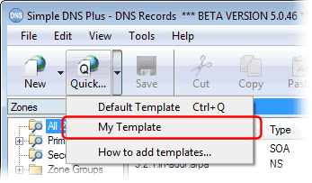
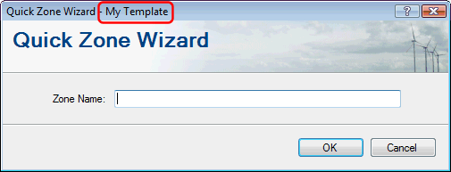
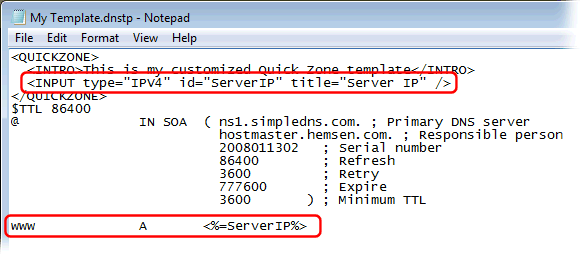
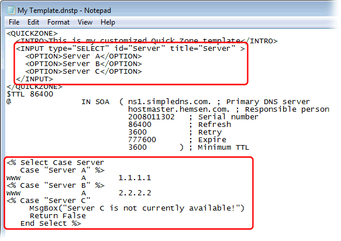
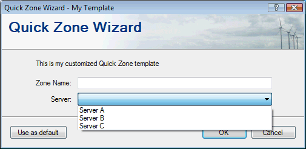
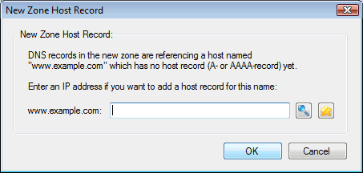

In Simple DNS Plus v. 5.0 and later, the "Quick Zone Wizard" (formerly "Quick Domain Wizard") is template based, and supports multiple templates through a drop-down menu on the Quick button.
Making and using your own templates is easy and can be a great help and time saver if you frequently setup new DNS zones.
You can use templates for example to ensure company standards are followed, automate which DNS records to add for different customer types, make it easier for novice staff, etc.
Templates can simply be static standard RFC based zone files, but they can also become "active" by adding ASP style tags (<%...%>), VB.NET code, and custom input fields.
You can add a new template simply by copying and renaming an existing zone file.
A simple template like this allows you to easily create new zones with exactly the same layout each time.
First pick an existing zone (or make a new one) that you want to use as a template for new zones.
Copy the zone file for that zone to the "Templates" directory.
The location of zones files is configured in the Options dialog / DNS / Data Files section. By default this is:
Windows Vista/2008: C:\ProgramData\JH Software\Simple DNS Plus\ZoneFiles
Earlier Windows versions: C:\Documents and Settings\All Users\Application Data\JH Software\Simple DNS Plus\ZoneFiles
The "Templates" directory is found at (create it if it isn't there already):
Windows Vista/2008: C:\ProgramData\JH Software\Simple DNS Plus\Templates
Earlier Windows versions: C:\Documents and Settings\All Users\Application Data\JH Software\Simple DNS Plus\Templates
In the "templates" directory, rename the zone file to whatever you want to call the template + ".dnstp":
(make sure the Windows Explorer "Hide extensions for known file types" setting is turned off)

That's it - Now you have a working template!
To use it, simply select it from the drop-down menu on the Quick button:

And you will get to the Quick Zone Wizard dialog for the new template:

Enter a zone name, and the wizard will create a new zone exactly like the one you copied the template file from.
If you want your new template to be the default template so you can use it by just hitting the "Quick" button, simply name the template file "_default.dnstp".
You can add an introduction text as well as custom input fields to the wizard dialog by adding some special XML code at the top of the template file.
For example; open the template file with a text editor, and add the XML shown here:

After saving the template file, the Quick Zone Wizard dialog for this template will look like this:

To add input fields to the wizard dialog, you add <INPUT> elements to the XML.
You can use the data entered in the input field by adding an ASP style tag <%=input_field_id%> wherever you want the data appear in the zone file:

After saving the template file, the Quick Zone Wizard dialog will have a new "Server IP" input field:

And the resulting zone will have an A-record for "www.<zonename>" pointing to the entered IP address.
You can add as many input fields as you need (above a certain number the dialog will just get a scroll bar).
For each input field (<INPUT> element) you must specify a "type" attribute, which controls what style of input control is used and what type of variable the entered data is returned as:
| type value | Variable type | Other attributes | Description |
|---|---|---|---|
| IPV4 | String | id, title, value, required | An IP address entry box with a lookup button |
| IPV6 | String | id, title, value, required | An IPv6 address entry box |
| DOMAIN | String | id, title, value, required | A domain name entry box |
| TEXT | String | id, title, value, required | A input box which accepts any entry |
| TTL | Integer | id, title, value | A TTL (time to live) entry control |
| CHECK | Boolean | id, title, checked | A check box |
| SELECT | String | id, title, required | A drop-down selection control |
IMPORTANT: To ensure proper formatting in the zone file, make sure to use the correct type rather than just using TEXT for everything.
For example the DOMAIN type automatically punycodes IDN domain names, adds a trailing dot, etc. which doesn't happen withthe TEXT type.
Other <INPUT> element attributes:
| Attribute | Description |
|---|---|
| id | Unique name of the variable that the entered data is returned in (required) |
| title | Lead text for the input field (required) |
| value | Default value |
| required | "true" or "false" indicating if data entry is required (defaults to "true") |
| checked | "true" or "false" indicating if the checkbox is checked (defaults to "false") |
"SELECT" type Input fields must have <OPTION> sub-elements. Each of these elements contains the text value of a selection. One of the <OPTION> elements may have a selected="true" attribute to specify the default selection.
Just like an ASP page, you can add program code (VB.NET) to a template file between <% ... %> tags.
In the following example, we first add a drop-down selection control used to select which web-server we want to host a new customer's domain name on, and then add code to populate the zone with different data based on the selection - or cancel the process if an unavailable server is selected:

The dialog will now have a drop-down control, and will generate the new zone according to the template program code:

1) After a template has been processed (with or without input fields/program code), Simple DNS Plus will automatically check all SOA, NS, MX, CNAME, and SRV records in the generated zone to see if they reference any host names within the same zone, and if so, if A-records matching those names exist.
If any A-records are missing, it will then ask for their IP addresses and add the A-records:

For example if your template has an input field asking for a host name (DOMAIN) for a mail server (MX-record), you won't know if the user enters a host name belonging in the same zone or somewhere else.
So should you also have an IP address input field for the mail server A-record?
No, simply leave it to Simple DNS Plus to ask for the IP address and add an A-record if the host name entered by the users turns out to belong in the same zone.
2) A number of pre-set ReadOnly variables are available for use in your code:
| Variable name | Type | Description |
|---|---|---|
| ServerName | String | The name of this DNS server in zone file format |
| AdminEmail | String | The admin e-mail address of this DNS server in zone file domain name format |
| defSOASerial | Integer | The default SOA-record serial number (see "Default Zone Values" dialog) |
| defSOARefresh | Integer | The default SOA-record Refresh interval (see "Default Zone Values" dialog) |
| defSOARetry | Integer | The default SOA-record Retry interval (see "Default Zone Values" dialog) |
| defSOAExpire | Integer | The default SOA-record Expire time (see "Default Zone Values" dialog) |
| defSOAMinimum | Integer | The default SOA-record Minimum TTL (see "Default Zone Values" dialog) |
| defNS2Servers | String() | The default secondary DNS servers (see "Default Zone Values" dialog) |
| defAllowZT | String | The default allowed zone transfer IPs (see "Default Zone Values" dialog) |
| defNotifyNS | Boolean | Notify DNS servers in zone level NS-records (added in v. 5.2 build 119). |
| defAlsoNotify | String | Additional DNS server IP addresses to notify (added in v. 5.2 build 119). |
| defDefaultTTL | Integer | The default "Defaut TTL" (see "Default Zone Values" dialog) |
| ZoneName | String | The name of the zone being created in zone file format. |
3) If you find that your template generates more of the zone file dynamically than what is static, you may want to write out the whole zone file or parts of it through code by appending text to the "ZoneFile" StringBuilder object (similar to "Response.Write" in ASP). For example:
ZoneFile.AppendLine("@ A 1.2.3.4")
4) If you want to add classes or sub-routines (sub/function) to the template code, you need to put these in a special <%! %> block. For example:
<%! Function Add(a As Integer, b As Integer) As Integer
Return a + b
End Function %>
5) If you want to use other .NET assemblies from your template code, you can reference these by adding <ASSEMBLY> elements to the <QUICKZONE> XML. For example:
<QUICKZONE>
<ASSEMBLY>system.dll</ASSEMBLY>
<QUICKZONE>